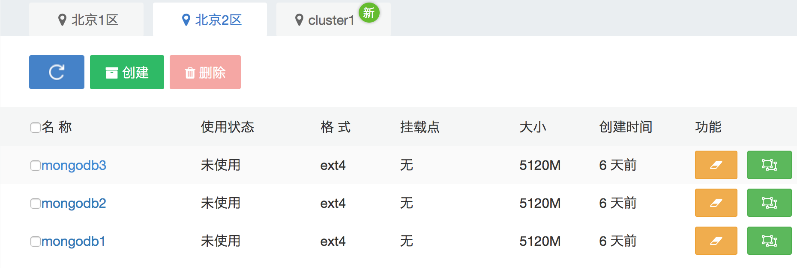
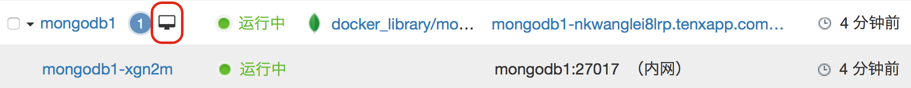
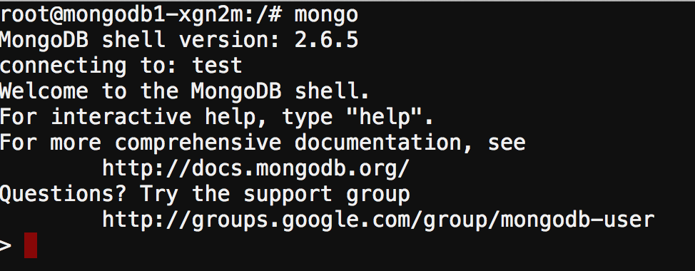
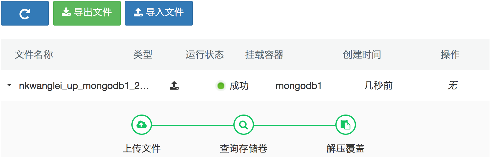

Mongodb 集群搭建
Mongodb是时下流行的NoSql数据库，它的存储方式是文档式存储，并不是Key-Value形式。Mongodb主要有三种集群方式的搭建：Replica Set / Sharding / Master-Slaver，本章主要讲解如何在时速云平台上进行 Replica Set 集群模式的搭建。
Replica Set 使用的是 n 个mongod节点，一同构建一个具备自动容错(auto-failover),自动恢复(auto-recovery)的高可用集群方案。
使用 Replica Set 来实现读写分离。通过在连接时指定或者在主库指定slave，由Secondary来分担读的压力，Primary只承担写操作。

下面我们就看一下如何在时速云上搭建一个Mongodb的集群，本示例的部署环境：
- Mongodb 版本 2.6.5
- 3个节点的 Replica set
- 开启了服务之间的认证
- 数据会持久化到数据卷中
具体搭建步骤
1.创建认证所需 key 文件
root@server:/# openssl rand -base64 741 > mongodb-keyfile
root@server:/# chmod 600 mongodb-keyfile
2.创建所需存储卷，每个5G，如下图所示

3.创建第一个 mongodb 容器服务，此时我们并没有开启认证机制，以便我们可以直接进行配置。第一个节点名称“mongodb1”。
3.1) 容器选择docker hub官方镜像的本地复本：docker_library/mongo

3.2) 待服务启动完毕，通过 Web Terminal 连接到容器内部
root@node1:/# mongo

通过用户和随机密码，登录到容器内部。

在 mongo 交互命令窗口，依次输入以下命令： 切换到 admin 用户
> use admin
switched to db admin
创建一个 site admin 用户
> db.createUser( {
user: "siteUserAdmin",
pwd: "password",
roles: [ { role: "userAdminAnyDatabase", db: "admin" } ]
});
创建一个 root 用户
> db.createUser( {
user: "siteRootAdmin",
pwd: "password",
roles: [ { role: "root", db: "admin" } ]
});
这样我们在没有添加认证机制之前创建了一些用户，以便后面使用这些用户登录进行进一步的配置。现在可以退出mongo 命令行，并关闭 Web Terminal 窗口了。
4.停止刚刚创建的第一个mongo 服务，只需要选中该服务，并选择“更多操作”－》“停止”即可。
5.将第 1 步生成的 key 文件上传到第 2 步创建的3个存储卷中

在“存储与备份”功能中，分别点击每个存储卷，进行 key 文件的上传操作。
6.删除第一个服务“mongodb1”，并按照原来的步骤重新创建一个mongodb的服务，务必选择原来的存储卷，并在执行命令中指定 key 文件和 Replica Set 的名字。
执行命令如下：
mongod --keyFile /data/db/mongodb-keyfile --replSet "rs0"
创建服务，并等待启动成功。
7.同样，打开这个服务的Web Terminal，进行 Replica Set的配置工作。进入mongo 控制台，并依次执行如下命令：
> use admin
switched to db admin
这次我们要使用在第三步中创建的角色、密码进行认证：
> db.auth("siteRootAdmin", "password");
现在我们可以初始化Replica Set了：
> rs.initiate()
{
"info2" : "no configuration explicitly specified -- making one",
"me" : "node1.example.com:27017",
"info" : "Config now saved locally. Should come online in about a minute.",
"ok" : 1
}
>
在mongo 命令行里面敲击两下回车，这时应该会自动切换到 rs0 的 PRIMARY 上，我们可以通过 rs.conf() 检查 Replica Set 的初始化配置。
>
rs0:PRIMARY> rs.conf()
{
"_id" : "rs0",
"members" : [
{
"_id" : 0,
"host" : "mongodb1-9rxbk:27017"
}
]
}
我们可以看到，host的值默认使用实例名作为主机名。但是我们的内网域名服务，服务之间需要通过服务名进行互联，因此我们需要更新此处的 host为服务名，以便mongo 服务节点之间可以通过正确的内网域名进行互通。
可以通过以下命令更新 host 值： cfg = rs.config(); cfg.members[0].host = "mongodb1"; rs.reconfig(cfg);
通过 rs.config() 再次检查 host 的值，确认已被修改为"mongodb1:27017" 即可。
8.接下来我们就可以添加后面的两个 mongodb 节点了。创建过程同 mongodb1 基本一致，只需要把名字改为 mongodb2, mongodb3，存储卷分别使用自己的存储卷即可。执行命令依旧是：
mongod --keyFile /data/db/mongodb-keyfile --replSet "rs0"
<截图显示服务情况>
9.在 mongodb1 服务上，把新创建的两个服务节点加入到 Replica Set 中。
9.1) 打开 mongodb1 的 Web Terminal，并进入 mongo 命令行
9.2) 此时应该会自动切换到 "rs0":PRIMARY 控制台，切换到 admin 并进行身份认证，接着依次输入以下命令：
use admin
db.auth("siteRootAdmin", "password");
rs0:PRIMARY> rs.add("mongodb2")
rs0:PRIMARY> rs.add("mongodb3")
最后，通过 rs.status() 验证这两个节点是否加入到集群中。
"rs0":PRIMARY> rs.status()
{
"set" : "\"rs0\"",
"date" : ISODate("2016-01-12T10:02:07Z"),
"myState" : 1,
"members" : [
{
"_id" : 0,
"name" : "mongodb1:27017",
"health" : 1,
"state" : 1,
"stateStr" : "PRIMARY",
"uptime" : 2410,
"optime" : Timestamp(1452592189, 1),
"optimeDate" : ISODate("2016-01-12T09:49:49Z"),
"electionTime" : Timestamp(1452590885, 1),
"electionDate" : ISODate("2016-01-12T09:28:05Z"),
"self" : true
},
{
"_id" : 1,
"name" : "mongodb2:27017",
"health" : 1,
"state" : 2,
"stateStr" : "SECONDARY",
"uptime" : 744,
"optime" : Timestamp(1452592189, 1),
"optimeDate" : ISODate("2016-01-12T09:49:49Z"),
"lastHeartbeat" : ISODate("2016-01-12T10:02:05Z"),
"lastHeartbeatRecv" : ISODate("2016-01-12T10:02:06Z"),
"pingMs" : 0,
"syncingTo" : "mongodb1:27017"
},
{
"_id" : 2,
"name" : "mongodb3:27017",
"health" : 1,
"state" : 2,
"stateStr" : "SECONDARY",
"uptime" : 738,
"optime" : Timestamp(1452592189, 1),
"optimeDate" : ISODate("2016-01-12T09:49:49Z"),
"lastHeartbeat" : ISODate("2016-01-12T10:02:06Z"),
"lastHeartbeatRecv" : ISODate("2016-01-12T10:02:06Z"),
"pingMs" : 0,
"syncingTo" : "mongodb1:27017"
}
],
"ok" : 1
}
注意：由于这些节点要完成和mongodb1 的同步工作，可能会有几秒的延时，也可以通过服务的日志信息查看同步状态。
这样我们就完成了 mongodb Replica Set 模式的集群搭建。
你随时可以在这个集群中添加新的节点；你也可以停止某个节点，甚至是 primary 节点，你会发现其他节点会被选举成主节点，保证服务的高可用。mongodb 的所有数据也被持久化到高可用存储卷中，重启、重新创建任意节点，都能保证数据的完整和一致性。